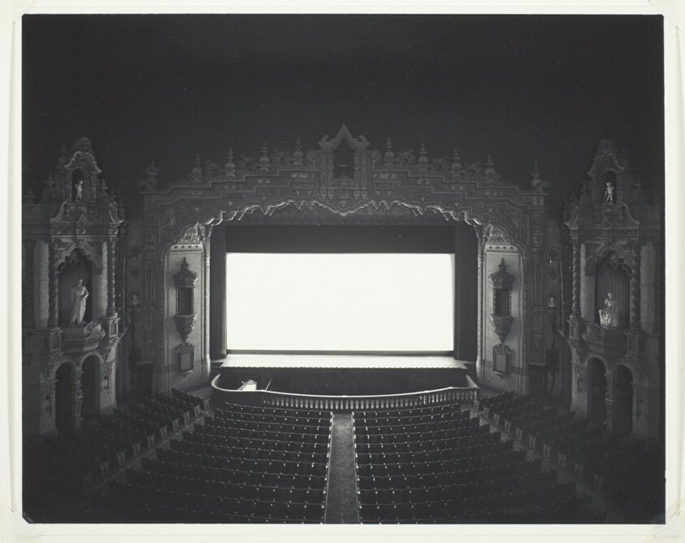

Akron Civic Theatre, Akron, Ohio
Hiroshi Sugimoto · 1980 · Gelatin silver print · 19.5 × 24.5 cm (image) · Art Institute of Chicago
In copyright. Look and learn: shown for study, not for download.
For this series, begun in 1978, Hiroshi Sugimoto set up a folding 4x5 camera on a tripod in old American movie palaces and drive-ins, opened the shutter when the film started and closed it when the film ended. The projector was the only light. He found that the kind of film changed the result: an optimistic story left a bright screen, a sad one a dark screen. Before he made these pictures he had dealt in Japanese antiquities in Soho.